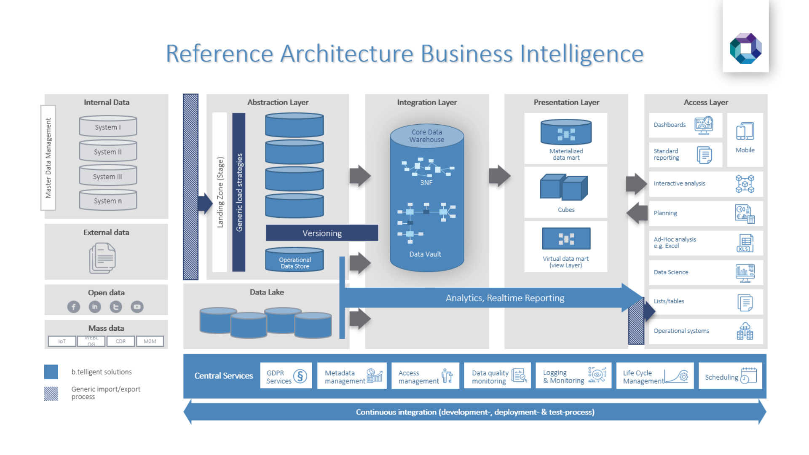
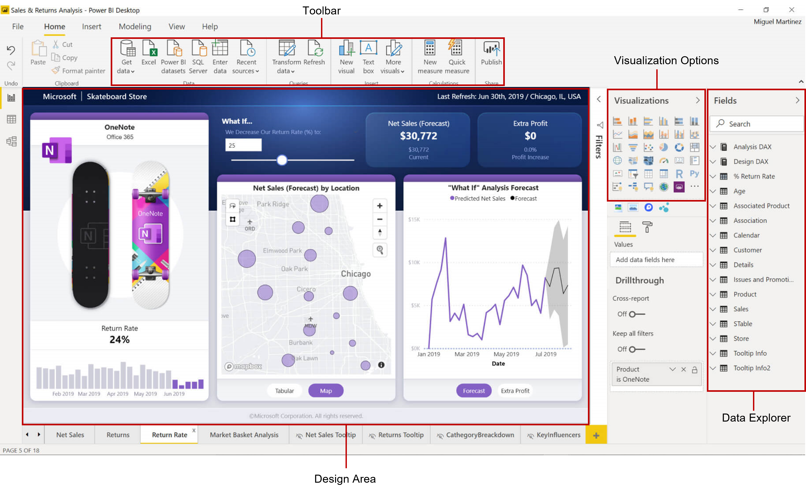
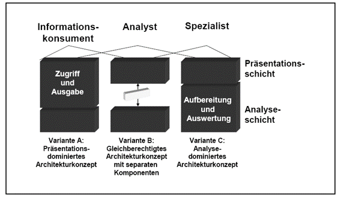

Begriffliche Klammer, die unterschiedliche Technologien und Konzepte im Umfeld der
entscheidungsunterstützenden Systeme zusammenführt und dabei eine
entscheidungsorientierte Sammlung und Aufbereitung von Daten über das Unternehmen
und dessen Umwelt sowie deren Darstellung in Form von geschäftsrelevanten
Informationen für Analyse-, Planungs- und Steuerungszwecke zum Gegenstand hat.
Gluchowski, P., Gabriel, R., & Dittmar, C. (2008). Management Support Systeme und Business
Intelligence: Computergestützte Informationssysteme für Fach- und Führungskräfte. Berlin:
Springer
Definition
Prozessorientierte Sichtweise
BI ist ein (kontinuierlicher) Prozess, der aus fragmentierten, inhomogenen
Unternehmungs-, Markt- und Wettbewerberdaten Wissen über eigene und fremde
Positionen,
Potenziale und Perspektiven generiert.
Gluchowski, P., Gabriel, R., & Dittmar, C. (2008). Management Support Systeme und
Business Intelligence: Computergestützte Informationssysteme für Fach- und Führungskräfte.
Berlin: Springer
Definition
Begriffsabgrenzung
Gluchowski, P., Gabriel, R., & Dittmar, C. (2008). Management Support Systeme und
Business Intelligence: Computergestützte Informationssysteme für Fach- und Führungskräfte.
Berlin: Springer
Abgrenzung OLTP
In Anlehnung an: Gluchowski, P., Gabriel, R., & Dittmar, C. (2008). Management Support Systeme
und Business Intelligence: Computergestützte Informationssysteme für Fach- und Führungskräfte.
Berlin: Springer
Technologien

b.telligent Deutschland GmbH (2022)
Anwendungen
b.telligent Deutschland GmbH (2022)
Anwendungen
Reporting
Betriebliches Berichtswesen
Ziel:
Die Mitarbeiter ereignis- oder zeitgesteuert mit relevanten Informationen versorgen. Es
umfasst alle Personen, Organisationseinheiten, Vorschriften, Daten und Prozesse, die bei
der Erzeugung und Weiterleitung von Berichten beteiligt sind.
Berichte:
Dokumente, die unterschiedliche Informationen für einen bestimmten
Untersuchungszweck miteinander kombinieren und in aufbereiteter Form vorhalten.
Zielgruppe sind betriebliche Fach- und Führungskräfte. Sie bekommen in
periodischen Abständen oder im Bedarfsfall bestimmte Fakten
geliefert, die helfen, Trends zu erkennen, Planungen durchzuführen oder
Kontrollaufgaben wahrzunehmen.
Anwendungen
OLAP
Online Analytical Processing
Software-Technologie, die Managern wie auch qualifizierten Mitarbeitern aus den Fachabteilungen
schnelle, interaktive und vielfältige Zugriffe auf relevante und konsistente Informationen
ermöglichen soll.
Im Vordergrund stehen dabei dynamische und multidimensionale Analysen auf
historischen, konsolidierten Datenbeständen.
Anwendungen
Dashboards

Microsoft PowerBI Desktop (https://powerbi.microsoft.com/de-de/desktop/)
Anwendungen
Data Mining
Allgemein verwendbare, effiziente Methoden, die autonom aus großen Rohdatenmengen
die bedeutsamsten und aussagekräftigsten Muster identifizieren und sie dem Anwender
als interessantes Wissen präsentieren.
Erforschung von Strukturzusammenhängen (Datenmustern) in Datenbanken
Anwendungen
Data Mining
Beispiel:
Entscheidungsbaumverfahren (Klassifizierung)
Zuordnung von Datenobjekten zu vorgegebenen Klassen
Es werden Regeln generiert und als Baumstruktur visualisiert, anhand derer
sich neue Datenobjekte eindeutig klassifizieren lassen
Eigene Darstellung, in Anlehnung an Provost, F. & Fawcett, T. (2013). Data Science for Business. O'Reilly
Nutzergruppen - Informationskonsument
Rufen zuvor aufbereitete und strukturierte Informationen ab, ohne diese weitergehend
analysieren oder nach eigenen Kriterien neu und frei kombinieren zu wollen
Standardisierte Sichten , die in festen Rhythmen aktualisiert werden
Standardberichtswesen, insbesondere Vergleichsdarstellungen mit Abweichungen (z.B.
Plan/Ist-Vergleiche) und Zeitreihen (z.B. Trends)
Möglichst einfacher Zugang zu den enthaltenen Informationen
Adressatengerechte Verteilung: Ausgereiftes Berechtigungs- und Rollenkonzept
Nutzergruppen - Analytiker
Nutzt flexible Navigationsmöglichkeiten im verfügbaren Datenraum
Will auch nicht unmittelbar einsichtige Chancen und Risiken für die Unternehmung frühzeitig erkennen
Wünscht stufenweise Disaggregationsmöglichkeiten
Rascher Lösungsbedarf. Graphische Aufbereitung
Black-Box Ansatz: Komplexität der technologischen Gesamtlösung verbergen
Im Einzelfall stellt er Auswertungen auch einem größeren Benutzerkreis zur Verfügung
Nutzergruppen - Spezialist / Poweruser
Spezialisten, bezieht sich auf die eingesetzten statistischen, mathematischen oder ökonomischen Methoden
Widmen sich formal komplizierten Aufgabenstellungen und greifen bei der Bearbeitung auf anspruchsvolle Werkzeuge mit weit reichender analytischer Funktionalität zurück
Über aufwändige Korrelationen Ursache-Wirkungszusammenhänge erkennen, Entwirft ggfs. eigene Lösungsverfahren. Kennt Datenstrukturen
Statistiker, Mathematiker oder Informatiker
Herausforderung: Analyseergebnisse derart aufzubereiten, dass diese im Rahmen der Entscheidungsfindung auch genutzt werden können
Nutzergruppen
Zuordnung von BI-Nutzergruppen zu Architekturkomponenten

Gluchowski, P., Gabriel, R., & Dittmar, C. (2008). Management Support Systeme und Business
Intelligence: Computergestützte Informationssysteme für Fach- und Führungskräfte. Berlin:
Springer